Last updated: 2023-07-12
Checks: 7 0
Knit directory: Goza_AMY_CNV/
This reproducible R Markdown analysis was created with workflowr (version 1.7.0). The Checks tab describes the reproducibility checks that were applied when the results were created. The Past versions tab lists the development history.
Great! Since the R Markdown file has been committed to the Git repository, you know the exact version of the code that produced these results.
Great job! The global environment was empty. Objects defined in the global environment can affect the analysis in your R Markdown file in unknown ways. For reproduciblity it’s best to always run the code in an empty environment.
The command set.seed(20230616) was run prior to running
the code in the R Markdown file. Setting a seed ensures that any results
that rely on randomness, e.g. subsampling or permutations, are
reproducible.
Great job! Recording the operating system, R version, and package versions is critical for reproducibility.
Nice! There were no cached chunks for this analysis, so you can be confident that you successfully produced the results during this run.
Great job! Using relative paths to the files within your workflowr project makes it easier to run your code on other machines.
Great! You are using Git for version control. Tracking code development and connecting the code version to the results is critical for reproducibility.
The results in this page were generated with repository version 07ec930. See the Past versions tab to see a history of the changes made to the R Markdown and HTML files.
Note that you need to be careful to ensure that all relevant files for
the analysis have been committed to Git prior to generating the results
(you can use wflow_publish or
wflow_git_commit). workflowr only checks the R Markdown
file, but you know if there are other scripts or data files that it
depends on. Below is the status of the Git repository when the results
were generated:
Ignored files:
Ignored: .DS_Store
Ignored: .Rhistory
Ignored: .Rproj.user/
Ignored: data/.DS_Store
Ignored: data/AMY_CNV_data/
Unstaged changes:
Modified: analysis/analysisv2.Rmd
Note that any generated files, e.g. HTML, png, CSS, etc., are not included in this status report because it is ok for generated content to have uncommitted changes.
These are the previous versions of the repository in which changes were
made to the R Markdown (analysis/analysis.Rmd) and HTML
(docs/analysis.html) files. If you’ve configured a remote
Git repository (see ?wflow_git_remote), click on the
hyperlinks in the table below to view the files as they were in that
past version.
| File | Version | Author | Date | Message |
|---|---|---|---|---|
| Rmd | 07ec930 | Tina Lasisi | 2023-07-12 | Publish repo |
| html | 07ec930 | Tina Lasisi | 2023-07-12 | Publish repo |
library(readxl)
library(ggplot2)
library(ggridges)
library(ggpubr)
library(tidyverse)── Attaching core tidyverse packages ──────────────────────── tidyverse 2.0.0 ──
✔ dplyr 1.1.2 ✔ readr 2.1.4
✔ forcats 1.0.0 ✔ stringr 1.5.0
✔ lubridate 1.9.2 ✔ tibble 3.2.1
✔ purrr 1.0.1 ✔ tidyr 1.3.0
── Conflicts ────────────────────────────────────────── tidyverse_conflicts() ──
✖ dplyr::filter() masks stats::filter()
✖ dplyr::lag() masks stats::lag()
ℹ Use the conflicted package (<http://conflicted.r-lib.org/>) to force all conflicts to become errorsamy.d <- read_excel("data/AMY_CNV_data/CNV_sAA_TP_all data.xlsx", sheet = "All data", range = 'A6:AI106')
head(amy.d)# A tibble: 6 × 35
`Sample ID` Cluster `Primer 1 - target` `Primer 1 - ref` `Ratio for primer 1`
<dbl> <dbl> <dbl> <dbl> <dbl>
1 1 1 NA NA NA
2 2 1 604 108 5.59
3 6 1 19 4.9 3.88
4 7 1 86 11.8 7.29
5 8 1 NA NA NA
6 9 1 293 74 3.96
# ℹ 30 more variables: Primer1_Diploid <dbl>, `Primer 2 - target` <dbl>,
# `Primer 2 - ref` <dbl>, `Ratio for primer 2` <dbl>, Primer2_Diploid <dbl>,
# `Standardized DNA conc DNA Salimetrics/TP before (-)` <dbl>,
# `Standardized DNA conc DNA Qbit/TP before (-)` <dbl>,
# `Total Protein Before 1 (ug/mL)` <chr>,
# `Total Protein Before 2 (ug/mL)` <chr>,
# `Total Protein Before Mean (ug/mL)` <dbl>, …str(amy.d)tibble [100 × 35] (S3: tbl_df/tbl/data.frame)
$ Sample ID : num [1:100] 1 2 6 7 8 9 10 13 15 16 ...
$ Cluster : num [1:100] 1 1 1 1 1 1 1 1 1 1 ...
$ Primer 1 - target : num [1:100] NA 604 19 86 NA 293 NA NA 2840 205 ...
$ Primer 1 - ref : num [1:100] NA 108 4.9 11.8 NA 74 NA NA 601 46 ...
$ Ratio for primer 1 : num [1:100] NA 5.59 3.88 7.29 NA ...
$ Primer1_Diploid : num [1:100] NA 11.19 7.76 14.58 NA ...
$ Primer 2 - target : num [1:100] NA 640 13.5 79 NA 166 401 NA 1180 105 ...
$ Primer 2 - ref : num [1:100] NA 198 3.6 19 NA 33 106 NA 487 35 ...
$ Ratio for primer 2 : num [1:100] NA 3.23 3.75 4.16 NA ...
$ Primer2_Diploid : num [1:100] NA 6.46 7.5 8.32 NA ...
$ Standardized DNA conc DNA Salimetrics/TP before (-): num [1:100] 0.0149 0.0408 0.153 0.0666 0.0466 ...
$ Standardized DNA conc DNA Qbit/TP before (-) : num [1:100] 0.00189 0.0278 0.00581 0.0371 0 ...
$ Total Protein Before 1 (ug/mL) : chr [1:100] "1392.8430000000001" "1786.9829999999999" "799.79200000000003" "2036.2429999999999" ...
$ Total Protein Before 2 (ug/mL) : chr [1:100] "1278.43" "1723.84" "741.803" "1478.17" ...
$ Total Protein Before Mean (ug/mL) : num [1:100] 1336 1755 771 1757 575 ...
$ Total Protein After 1 (ug/mL) : num [1:100] 798 1007 766 1109 641 ...
$ Total Protein After 2 (ug/mL) : num [1:100] 1227 1002 705 1100 558 ...
$ Total Protein Mean After (ug/mL) : num [1:100] 1013 1005 735 1105 600 ...
$ TP Change : num [1:100] -322.9 -750.6 -35.5 -652.5 25.4 ...
$ RNA_Sali (ng/uL) : num [1:100] 19.8 71.6 117.9 117 26.8 ...
$ 260/230 : num [1:100] 1.114 2.111 0.879 1.082 1.214 ...
$ 260/280 : num [1:100] 1.17 1.92 1.1 1.41 0.58 ...
$ RNA_Qbit (ng/uL) : chr [1:100] "2.52" "48.8" "4.4800000000000004" "65.2" ...
$ sAA Mean Collection Before (U/mL) : num [1:100] 83.6 37.9 37.4 132.7 78.4 ...
$ sAA Mean Collection After (U/mL) : num [1:100] 70.5 54 46.1 103.3 83.5 ...
$ sAA Change : num [1:100] -13.12 16.07 8.69 -29.36 5.08 ...
$ Weight Saliva (g) - 1 : num [1:100] 11.62 8.57 12.82 5.53 11.59 ...
$ Weight Saliva (g) - 2 : num [1:100] 12.77 11.57 12.9 6.22 11.04 ...
$ Flow Rate 1 (g/min) : num [1:100] 1.162 0.857 1.282 0.553 1.159 ...
$ Flow Rate 2 (g/min) : num [1:100] 1.277 1.157 1.29 0.622 1.104 ...
$ Citrus_Sum_120sec : num [1:100] 72 0 29 116 47 113 18 81 98 119 ...
$ Age : num [1:100] 27 23 41 40 41 43 23 24 23 36 ...
$ Gender : chr [1:100] "female" "female" "male" "female" ...
$ Starch Frequency : num [1:100] 4 1 2 2 2 2 2 1 2 3 ...
$ Race : chr [1:100] "white" "white" "white" "white" ...amy.d$`Sample ID` <- as.factor(amy.d$`Sample ID`)
amy.d$Cluster <- as.factor(amy.d$Cluster)# 1. Histograms for CNV Primer 1 and CNV Primer 2 and metadata
# CNV Primer 1 targeting AMY1 and AMY2
cnv.amy12.p <- ggplot(amy.d, aes(x = `Primer1_Diploid`)) +
geom_histogram(aes(y = ..density..), color = 'blue',
fill = 'blue', alpha = .5, binwidth = 1) +
#geom_density(alpha = .2, fill = 'blue') +
geom_vline(aes(xintercept=12.5), # mean
color="blue", linetype="solid", linewidth=.5) +
geom_vline(aes(xintercept=11.6), #median
color="blue", linetype="dashed", linewidth=.5) +
xlab(expression(paste(italic("AMY1")," and ",italic("AMY2"),
" diploid gene copy number"))) +
xlim(1,28) +
ylim(0,0.2) +
theme_classic()
cnv.amy12.pWarning: The dot-dot notation (`..density..`) was deprecated in ggplot2 3.4.0.
ℹ Please use `after_stat(density)` instead.
This warning is displayed once every 8 hours.
Call `lifecycle::last_lifecycle_warnings()` to see where this warning was
generated.Warning: Removed 27 rows containing non-finite values (`stat_bin()`).Warning: Removed 2 rows containing missing values (`geom_bar()`).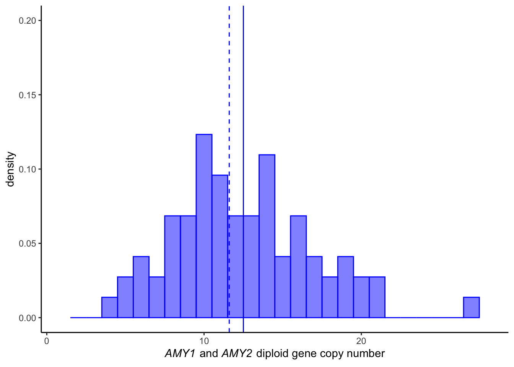
| Version | Author | Date |
|---|---|---|
| 07ec930 | Tina Lasisi | 2023-07-12 |
# CNV Primer 2 targeting AMY1
cnv.amy1.p <- ggplot(amy.d, aes(x = `Primer2_Diploid`)) +
geom_histogram(aes(y = ..density..), color = 'darkgreen',
fill = 'darkgreen', alpha = .5, binwidth = 1) +
# geom_density(alpha = .2, fill = 'darkgreen') +
geom_vline(aes(xintercept=8.1), #mean
color="darkgreen", linetype="solid", size=.5) +
geom_vline(aes(xintercept=7.1),
color="darkgreen", linetype="dashed", size=.5) +
xlab(expression(paste(italic("AMY1")," diploid gene copy number"))) +
xlim(1,26) +
ylim(0,0.2) +
theme_classic()Warning: Using `size` aesthetic for lines was deprecated in ggplot2 3.4.0.
ℹ Please use `linewidth` instead.
This warning is displayed once every 8 hours.
Call `lifecycle::last_lifecycle_warnings()` to see where this warning was
generated.cnv.amy1.pWarning: Removed 23 rows containing non-finite values (`stat_bin()`).Warning: Removed 2 rows containing missing values (`geom_bar()`).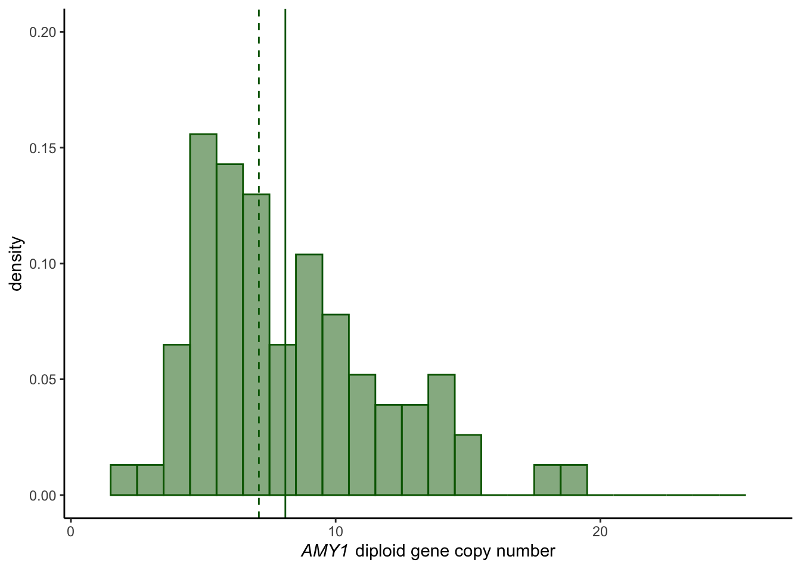
| Version | Author | Date |
|---|---|---|
| 07ec930 | Tina Lasisi | 2023-07-12 |
# Age
age.p <- ggplot(amy.d, aes(x = `Age`)) +
geom_histogram(aes(y = ..density..), color = 'red',
fill = 'white') +
geom_density(alpha = .2, fill = 'red') +
xlab('Age') +
theme_classic()
age.p`stat_bin()` using `bins = 30`. Pick better value with `binwidth`.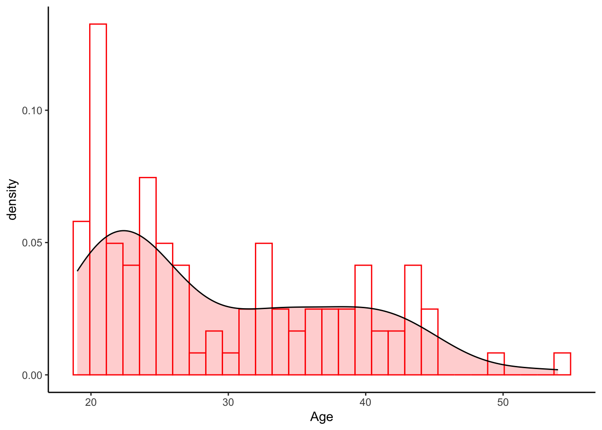
| Version | Author | Date |
|---|---|---|
| 07ec930 | Tina Lasisi | 2023-07-12 |
table(amy.d$Gender)
female male
62 38 ggarrange(cnv.amy12.p, cnv.amy1.p,
ncol = 1, nrow = 2)Warning: Removed 27 rows containing non-finite values (`stat_bin()`).Warning: Removed 2 rows containing missing values (`geom_bar()`).Warning: Removed 23 rows containing non-finite values (`stat_bin()`).Warning: Removed 2 rows containing missing values (`geom_bar()`).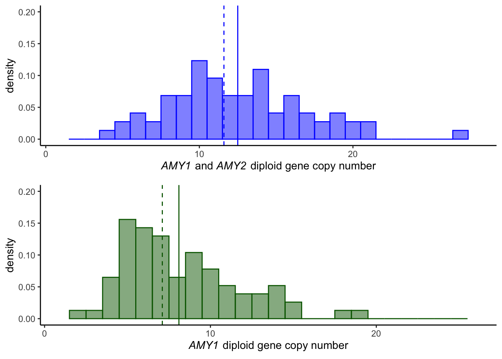
| Version | Author | Date |
|---|---|---|
| 07ec930 | Tina Lasisi | 2023-07-12 |
# 2. scatter plots sAA vs CNV - before and after, Primer 1 and 2
#BEFORE
# 2a ... sAA before over CNV primer 1
sAAbef.cnv1.p <- ggplot(amy.d, aes(x = `Primer1_Diploid`,
y = `sAA Mean Collection Before (U/mL)`,
# color = factor(Cluster)
)) + geom_point() +
geom_smooth(method = 'lm') +
stat_regline_equation(label.x = 1, label.y = 800) +
stat_cor(aes(label = paste(..rr.label.., ..p.label.., sep = "~`,`~")),
label.x = 1, label.y = 750) +
# xlab() +
ylim(0,800) +
xlim(1,28) +
theme_classic() +
theme(legend.position = 'bottom')
sAAbef.cnv1.p`geom_smooth()` using formula = 'y ~ x'Warning: Removed 27 rows containing non-finite values (`stat_smooth()`).Warning: Removed 27 rows containing non-finite values
(`stat_regline_equation()`).Warning: Removed 27 rows containing non-finite values (`stat_cor()`).Warning: Removed 27 rows containing missing values (`geom_point()`).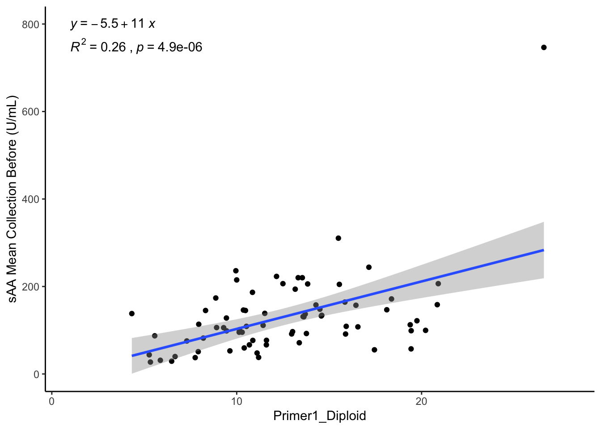
| Version | Author | Date |
|---|---|---|
| 07ec930 | Tina Lasisi | 2023-07-12 |
# 2b ... sAA before over CNV primer 2
sAAbef.cnv2.p <- ggplot(amy.d, aes(x = `Primer2_Diploid`,
y = `sAA Mean Collection Before (U/mL)`,
# color = factor(Cluster)
)) + geom_point() +
geom_smooth(method = 'lm') +
stat_regline_equation(label.x = 1, label.y = 800) +
stat_cor(aes(label = paste(..rr.label.., ..p.label.., sep = "~`,`~")),
label.x = 1, label.y = 750) +
# xlab() +
ylim(0,800) +
xlim(1,28) +
theme_classic() +
theme(legend.position = 'bottom')
sAAbef.cnv2.p`geom_smooth()` using formula = 'y ~ x'Warning: Removed 23 rows containing non-finite values (`stat_smooth()`).Warning: Removed 23 rows containing non-finite values
(`stat_regline_equation()`).Warning: Removed 23 rows containing non-finite values (`stat_cor()`).Warning: Removed 23 rows containing missing values (`geom_point()`).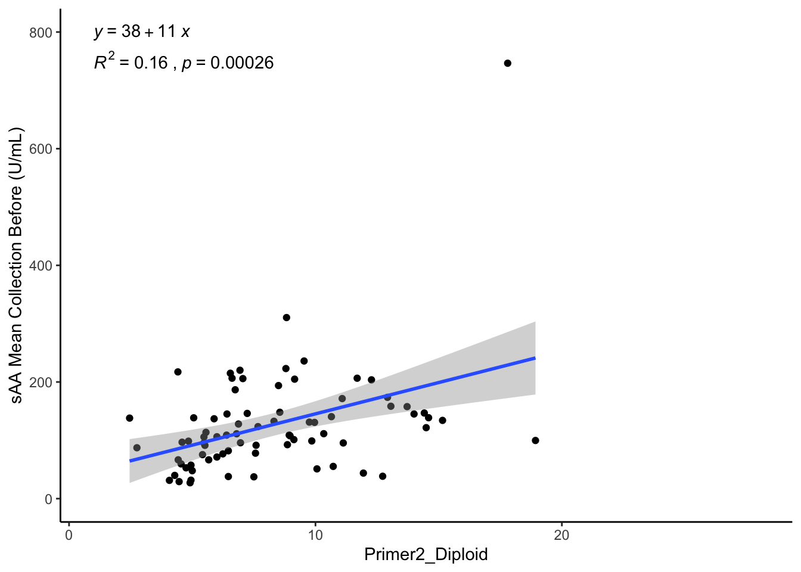
| Version | Author | Date |
|---|---|---|
| 07ec930 | Tina Lasisi | 2023-07-12 |
# AFTER
# 2c ... sAA after over CNV primer 1
sAAaft.cnv1.p <- ggplot(amy.d, aes(x = `Primer1_Diploid`,
y = `sAA Mean Collection After (U/mL)`,
#color = factor(Cluster)
)) + geom_point() +
geom_smooth(method = 'lm') +
stat_regline_equation(label.x = 1, label.y = 800) +
stat_cor(aes(label = paste(..rr.label.., ..p.label.., sep = "~`,`~")),
label.x = 1, label.y = 750) +
ylim(0,800) +
xlim(1,28) +
theme_classic() +
theme(legend.position = 'bottom')
sAAaft.cnv1.p`geom_smooth()` using formula = 'y ~ x'Warning: Removed 27 rows containing non-finite values (`stat_smooth()`).Warning: Removed 27 rows containing non-finite values
(`stat_regline_equation()`).Warning: Removed 27 rows containing non-finite values (`stat_cor()`).Warning: Removed 27 rows containing missing values (`geom_point()`).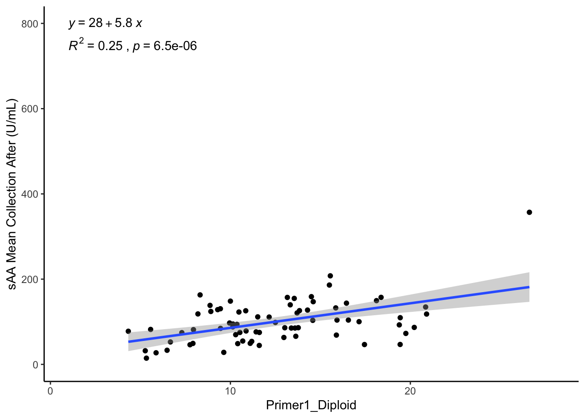
| Version | Author | Date |
|---|---|---|
| 07ec930 | Tina Lasisi | 2023-07-12 |
# 2d ... sAA after over CNV primer 2
sAAaft.cnv2.p <- ggplot(amy.d, aes(x = `Primer2_Diploid`,
y = `sAA Mean Collection After (U/mL)`,
#color = factor(Cluster)
)) + geom_point() +
geom_smooth(method = 'lm') +
stat_regline_equation(label.x = 1, label.y = 800) +
stat_cor(aes(label = paste(..rr.label.., ..p.label.., sep = "~`,`~")),
label.x = 1, label.y = 750) +
ylim(0,800) +
xlim(1,28) +
theme_classic() +
theme(legend.position = 'bottom')
sAAaft.cnv2.p`geom_smooth()` using formula = 'y ~ x'Warning: Removed 23 rows containing non-finite values (`stat_smooth()`).Warning: Removed 23 rows containing non-finite values
(`stat_regline_equation()`).Warning: Removed 23 rows containing non-finite values (`stat_cor()`).Warning: Removed 23 rows containing missing values (`geom_point()`).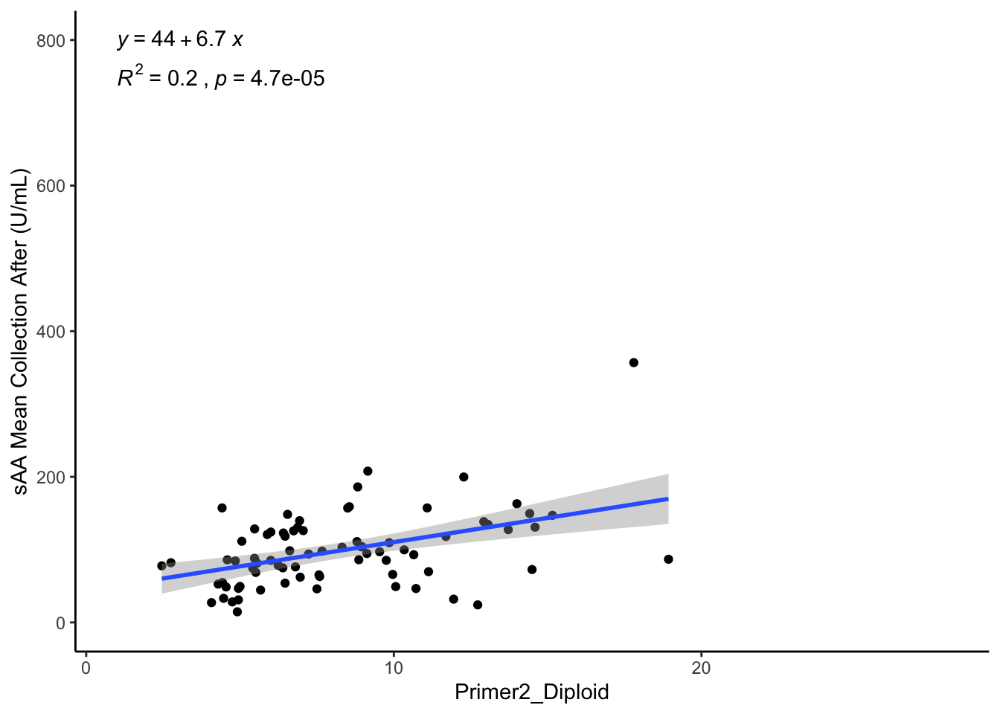
| Version | Author | Date |
|---|---|---|
| 07ec930 | Tina Lasisi | 2023-07-12 |
# sAA vs. Primer 1 (AMY1+2) and Primer 2 (AMY1) before and after
ggarrange(sAAbef.cnv1.p, sAAaft.cnv1.p,
sAAbef.cnv2.p, sAAaft.cnv2.p,
nrow = 2, ncol = 2)`geom_smooth()` using formula = 'y ~ x'Warning: Removed 27 rows containing non-finite values (`stat_smooth()`).Warning: Removed 27 rows containing non-finite values
(`stat_regline_equation()`).Warning: Removed 27 rows containing non-finite values (`stat_cor()`).Warning: Removed 27 rows containing missing values (`geom_point()`).`geom_smooth()` using formula = 'y ~ x'Warning: Removed 27 rows containing non-finite values (`stat_smooth()`).Warning: Removed 27 rows containing non-finite values
(`stat_regline_equation()`).Warning: Removed 27 rows containing non-finite values (`stat_cor()`).Warning: Removed 27 rows containing missing values (`geom_point()`).`geom_smooth()` using formula = 'y ~ x'Warning: Removed 23 rows containing non-finite values (`stat_smooth()`).Warning: Removed 23 rows containing non-finite values
(`stat_regline_equation()`).Warning: Removed 23 rows containing non-finite values (`stat_cor()`).Warning: Removed 23 rows containing missing values (`geom_point()`).`geom_smooth()` using formula = 'y ~ x'Warning: Removed 23 rows containing non-finite values (`stat_smooth()`).Warning: Removed 23 rows containing non-finite values
(`stat_regline_equation()`).Warning: Removed 23 rows containing non-finite values (`stat_cor()`).Warning: Removed 23 rows containing missing values (`geom_point()`).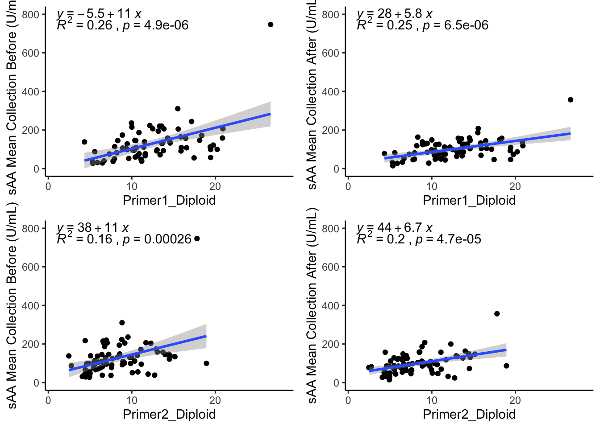
| Version | Author | Date |
|---|---|---|
| 07ec930 | Tina Lasisi | 2023-07-12 |
create_glm_and_summary_plots <- function(outcome_vars, input_vars, data) {
plots_list <- list()
for (outcome_var in outcome_vars) {
outcome_variable_plots <- list()
for (input_var in input_vars) {
plot_title <- paste(outcome_var, " ~ ", input_var)
scatter_plot <- ggplot(data, aes_string(x = input_var , y = outcome_var)) +
geom_point() +
geom_smooth(method = 'lm') +
stat_regline_equation(label.x.npc = 0.1, label.y.npc = 0.9) +
stat_cor(aes(label = paste(..rr.label.., ..p.label.., sep = "~`,`~")),
label.x.npc = 0.1, label.y.npc = 0.85) +
theme_classic() +
labs(title = plot_title) +
theme(legend.position = 'bottom')
outcome_variable_plots[[length(outcome_variable_plots) + 1]] <- scatter_plot
}
plots_list[[length(plots_list) + 1]] <- outcome_variable_plots
}
return(plots_list)
}outcome_variables <- c("`sAA Mean Collection Before (U/mL)`",
"`sAA Mean Collection After (U/mL)`",
"`sAA Change`",
"`Total Protein Before Mean (ug/mL)`",
"`Total Protein Mean After (ug/mL)`",
"`TP Change`")
input_variables <- c("Primer1_Diploid",
"Primer2_Diploid")chunk_list <- function(x, n) {
lapply(seq(1, length(x), by = n), function(i) {x[i:(i + n - 1)]})
}all_plots <- create_glm_and_summary_plots(outcome_variables, input_variables, amy.d)Warning: `aes_string()` was deprecated in ggplot2 3.0.0.
ℹ Please use tidy evaluation idioms with `aes()`.
ℹ See also `vignette("ggplot2-in-packages")` for more information.
This warning is displayed once every 8 hours.
Call `lifecycle::last_lifecycle_warnings()` to see where this warning was
generated.plot_subsets <- chunk_list(all_plots, 3)for(i in seq_along(plot_subsets)) {
subset_plots <- plot_subsets[[i]]
plot_list <- c()
for (j in 1:length(subset_plots)) {
plot_list <- c(plot_list, subset_plots[[j]])
}
combined_plots <- ggarrange(plotlist = plot_list, nrow = 3, ncol = 2)
print(combined_plots)
}`geom_smooth()` using formula = 'y ~ x'Warning: Removed 27 rows containing non-finite values (`stat_smooth()`).Warning: Removed 27 rows containing non-finite values
(`stat_regline_equation()`).Warning: Removed 27 rows containing non-finite values (`stat_cor()`).Warning: Removed 27 rows containing missing values (`geom_point()`).`geom_smooth()` using formula = 'y ~ x'Warning: Removed 22 rows containing non-finite values (`stat_smooth()`).Warning: Removed 22 rows containing non-finite values
(`stat_regline_equation()`).Warning: Removed 22 rows containing non-finite values (`stat_cor()`).Warning: Removed 22 rows containing missing values (`geom_point()`).`geom_smooth()` using formula = 'y ~ x'Warning: Removed 27 rows containing non-finite values (`stat_smooth()`).Warning: Removed 27 rows containing non-finite values
(`stat_regline_equation()`).Warning: Removed 27 rows containing non-finite values (`stat_cor()`).Warning: Removed 27 rows containing missing values (`geom_point()`).`geom_smooth()` using formula = 'y ~ x'Warning: Removed 22 rows containing non-finite values (`stat_smooth()`).Warning: Removed 22 rows containing non-finite values
(`stat_regline_equation()`).Warning: Removed 22 rows containing non-finite values (`stat_cor()`).Warning: Removed 22 rows containing missing values (`geom_point()`).`geom_smooth()` using formula = 'y ~ x'Warning: Removed 27 rows containing non-finite values (`stat_smooth()`).Warning: Removed 27 rows containing non-finite values
(`stat_regline_equation()`).Warning: Removed 27 rows containing non-finite values (`stat_cor()`).Warning: Removed 27 rows containing missing values (`geom_point()`).`geom_smooth()` using formula = 'y ~ x'Warning: Removed 22 rows containing non-finite values (`stat_smooth()`).Warning: Removed 22 rows containing non-finite values
(`stat_regline_equation()`).Warning: Removed 22 rows containing non-finite values (`stat_cor()`).Warning: Removed 22 rows containing missing values (`geom_point()`).`geom_smooth()` using formula = 'y ~ x'Warning: Removed 27 rows containing non-finite values (`stat_smooth()`).Warning: Removed 27 rows containing non-finite values
(`stat_regline_equation()`).Warning: Removed 27 rows containing non-finite values (`stat_cor()`).Warning: Removed 27 rows containing missing values (`geom_point()`).`geom_smooth()` using formula = 'y ~ x'Warning: Removed 22 rows containing non-finite values (`stat_smooth()`).Warning: Removed 22 rows containing non-finite values
(`stat_regline_equation()`).Warning: Removed 22 rows containing non-finite values (`stat_cor()`).Warning: Removed 22 rows containing missing values (`geom_point()`).`geom_smooth()` using formula = 'y ~ x'Warning: Removed 27 rows containing non-finite values (`stat_smooth()`).Warning: Removed 27 rows containing non-finite values
(`stat_regline_equation()`).Warning: Removed 27 rows containing non-finite values (`stat_cor()`).Warning: Removed 27 rows containing missing values (`geom_point()`).`geom_smooth()` using formula = 'y ~ x'Warning: Removed 22 rows containing non-finite values (`stat_smooth()`).Warning: Removed 22 rows containing non-finite values
(`stat_regline_equation()`).Warning: Removed 22 rows containing non-finite values (`stat_cor()`).Warning: Removed 22 rows containing missing values (`geom_point()`).`geom_smooth()` using formula = 'y ~ x'Warning: Removed 27 rows containing non-finite values (`stat_smooth()`).Warning: Removed 27 rows containing non-finite values
(`stat_regline_equation()`).Warning: Removed 27 rows containing non-finite values (`stat_cor()`).Warning: Removed 27 rows containing missing values (`geom_point()`).`geom_smooth()` using formula = 'y ~ x'Warning: Removed 22 rows containing non-finite values (`stat_smooth()`).Warning: Removed 22 rows containing non-finite values
(`stat_regline_equation()`).Warning: Removed 22 rows containing non-finite values (`stat_cor()`).Warning: Removed 22 rows containing missing values (`geom_point()`).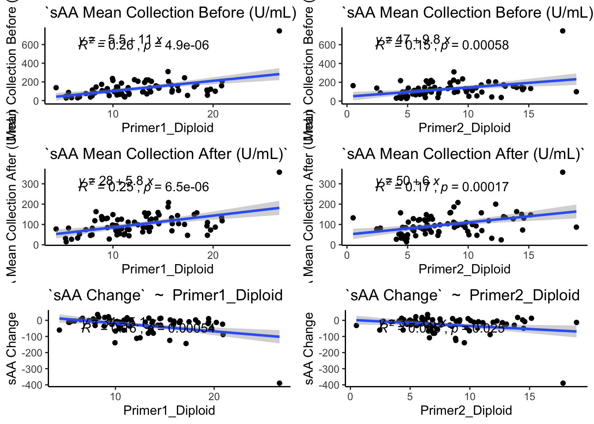
| Version | Author | Date |
|---|---|---|
| 07ec930 | Tina Lasisi | 2023-07-12 |
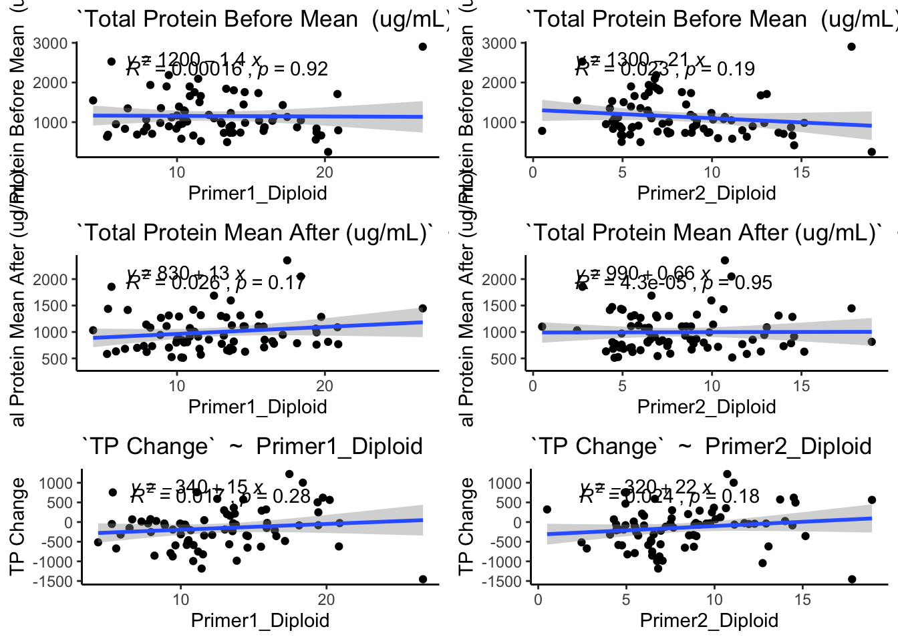
| Version | Author | Date |
|---|---|---|
| 07ec930 | Tina Lasisi | 2023-07-12 |
sessionInfo()R version 4.2.2 (2022-10-31)
Platform: aarch64-apple-darwin20 (64-bit)
Running under: macOS Ventura 13.4
Matrix products: default
BLAS: /Library/Frameworks/R.framework/Versions/4.2-arm64/Resources/lib/libRblas.0.dylib
LAPACK: /Library/Frameworks/R.framework/Versions/4.2-arm64/Resources/lib/libRlapack.dylib
locale:
[1] en_US.UTF-8/en_US.UTF-8/en_US.UTF-8/C/en_US.UTF-8/en_US.UTF-8
attached base packages:
[1] stats graphics grDevices utils datasets methods base
other attached packages:
[1] lubridate_1.9.2 forcats_1.0.0 stringr_1.5.0 dplyr_1.1.2
[5] purrr_1.0.1 readr_2.1.4 tidyr_1.3.0 tibble_3.2.1
[9] tidyverse_2.0.0 ggpubr_0.6.0 ggridges_0.5.4 ggplot2_3.4.2
[13] readxl_1.4.2 workflowr_1.7.0
loaded via a namespace (and not attached):
[1] httr_1.4.5 sass_0.4.5 jsonlite_1.8.4 splines_4.2.2
[5] carData_3.0-5 bslib_0.4.2 getPass_0.2-2 highr_0.10
[9] cellranger_1.1.0 yaml_2.3.7 pillar_1.9.0 backports_1.4.1
[13] lattice_0.21-8 glue_1.6.2 digest_0.6.31 promises_1.2.0.1
[17] ggsignif_0.6.4 colorspace_2.1-0 cowplot_1.1.1 htmltools_0.5.5
[21] httpuv_1.6.9 Matrix_1.5-4 pkgconfig_2.0.3 broom_1.0.4
[25] scales_1.2.1 processx_3.8.1 whisker_0.4.1 later_1.3.0
[29] tzdb_0.3.0 timechange_0.2.0 git2r_0.32.0 mgcv_1.8-42
[33] generics_0.1.3 farver_2.1.1 car_3.1-2 cachem_1.0.7
[37] withr_2.5.0 cli_3.6.1 magrittr_2.0.3 crayon_1.5.2
[41] evaluate_0.20 ps_1.7.5 fs_1.6.1 fansi_1.0.4
[45] nlme_3.1-162 rstatix_0.7.2 tools_4.2.2 hms_1.1.3
[49] lifecycle_1.0.3 munsell_0.5.0 callr_3.7.3 compiler_4.2.2
[53] jquerylib_0.1.4 rlang_1.1.0 grid_4.2.2 rstudioapi_0.14
[57] labeling_0.4.2 rmarkdown_2.21 gtable_0.3.3 abind_1.4-5
[61] rematch_1.0.1 polynom_1.4-1 R6_2.5.1 knitr_1.42
[65] fastmap_1.1.1 utf8_1.2.3 rprojroot_2.0.3 stringi_1.7.12
[69] Rcpp_1.0.10 vctrs_0.6.2 tidyselect_1.2.0 xfun_0.39